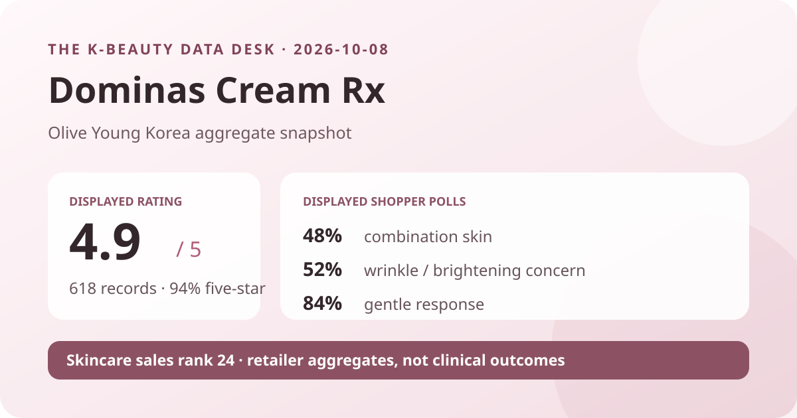
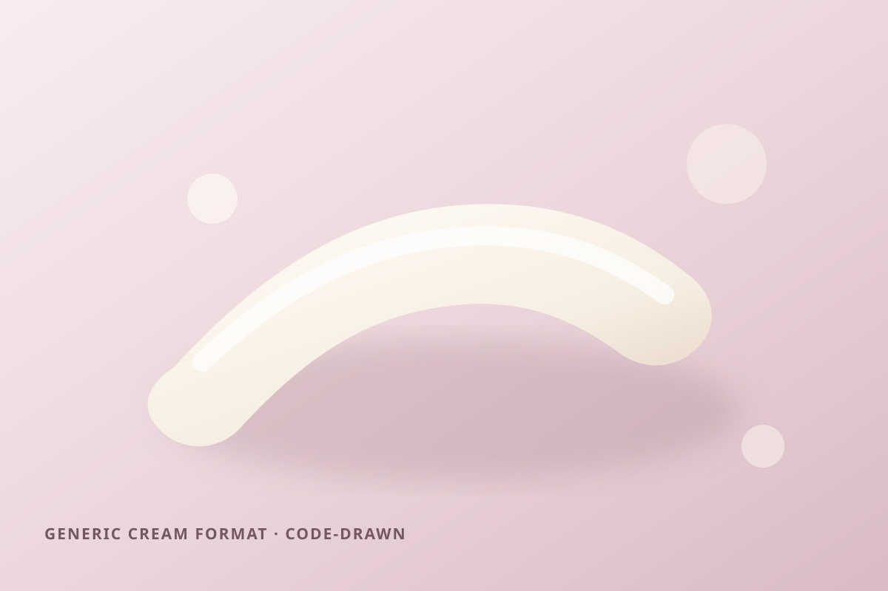

Data captured October 8, 2026. This is an independent analysis of retailer-displayed product information and anonymous aggregate review signals. I did not test the product, and no individual review, reviewer name, product photograph, or user photograph is copied, translated, or paraphrased.

The short version: Dominas Cream Rx appeared at number 24 in Olive Young Korea's live skincare sales ranking. The product header and detailed review view both displayed 4.9 out of 5 from 618 review records. Five-star ratings accounted for 94% of the shown distribution. Combination skin, wrinkle/brightening concern, and gentle were the leading shopper-poll responses.
A 4.9 average with 94% of displayed ratings at five stars is a strongly favorable storefront signal. The matching rating and record count in two page locations also reduce the chance that the article is combining figures from different product options. Still, the number summarizes a self-selected review pool. It does not show how many purchasers never reviewed, how invitations were issued, whether incentives affected participation, how long people used the cream, or whether every entry relates to the exact current promotional pack.
The base is large enough that one new rating is unlikely to transform the average, but 618 is still modest beside products with tens of thousands of records. The distribution is also highly concentrated at the top. That can reflect satisfaction, but it can coexist with selection effects, rounding, campaign timing, option pooling, and the general positivity common in commerce reviews. The safest conclusion is that the captured reviewer pool rated the listing very favorably—not that nearly everyone who might use the cream will have the same experience.
Zero-percent labels should not be read as proof that no low rating exists. The retailer displays whole-number percentages, so a very small share can round to zero. This article reports the interface exactly as shown and does not convert rounded percentages into invented review counts.
Combination skin was the largest displayed response at 48%, with dry skin almost tied at 47% and oily skin at 5%. This is more balanced between combination and dry respondents than a headline based only on the leading label would suggest. It also means the captured poll provides relatively little representation for oily respondents. None of the shares measures how well the cream worked for a skin type; they describe how respondents classified themselves in the retailer interface.
The poll denominator was not displayed in the captured view. It may differ from the 618 rating total because not every reviewer necessarily answered every question. Without that denominator, the percentages should not be turned into exact respondent counts or compared as though they came from a controlled sample.
Wrinkle/brightening was the leading concern response at 52%, followed by moisture at 40% and soothing at 8%. This tells us about the concerns selected by the shown respondent pool. It does not measure changes in wrinkles, brightness, spots, melasma, or pigmentation. People drawn to the product's positioning may be more likely to choose the matching concern label, so the result is partly audience context.
The irritation panel showed 84% gentle, 15% ordinary, and 1% felt irritation. That is a favorable perception pattern, but it is not a dermatology test or a guarantee for sensitive skin. Individual tolerance can depend on the complete current formula, quantity, frequency, other products, recent procedures, allergies, barrier condition, climate, and personal history.

The listing identifies the item as a cream, which supports only a category-level description: it is sold as a leave-on cream format rather than as a toner, serum, pad, or cleanser. I did not dispense, spread, smell, layer, or wear it. I therefore cannot responsibly call the actual texture rich, light, fast-absorbing, sticky, fragranced, makeup-friendly, or suitable for a particular season.
The local illustration uses a smooth ribbon and restrained rose-beige palette to explain a generic cream format without copying retailer photography, brand packaging, campaign graphics, or customer images. It is not a reconstruction of the product. Color and consistency in the illustration are creative choices, not observations.
“Rx” appears in the retailer-displayed product name. This article treats it only as naming and does not infer prescription status, drug approval, strength, concentration, delivery, or therapeutic effect. A short title cannot establish how a formula is regulated or what it can achieve. Buyers should check the current authorized package and market-specific product information for the exact item in hand.
The ranking page and review controls do not provide a controlled before-and-after comparison. They also do not isolate the cream from sunscreen use, procedures, devices, other skincare, seasonal sun exposure, or ordinary changes over time. Those confounders are especially important when someone is evaluating a concern such as visible pigmentation.
The captured header showed a 30 ml promotion with two 5 ml additions in the title, a ₩46,000 reference price, and a ₩33,900 promotional price. Gifts, coupons, stock, membership benefits, seller terms, and checkout price can change. The figures are a dated Korea-store snapshot, not a permanent value claim or a quote for another market.
Rank twenty-four means the listing occupied the twenty-fourth slot inside the selected skincare sales list at capture time. It does not mean twenty-fourth best by effectiveness, safety, formulation quality, value, or review volume. Promotion, merchandising, price, launch timing, bundle configuration, availability, season, and short-term demand can all affect placement.
The captured product header and review detail both displayed 4.9 out of 5 from 618 linked records. The star panel showed 94% at five stars. That is favorable retail feedback, not proof of clinical effectiveness.
Combination skin led at 48%, but dry skin was close at 47%; oily skin represented 5% of the displayed poll. These are audience shares, not recommendations.
No. It is a retailer perception poll with an unspecified denominator and uncontrolled use conditions. Personal tolerance can differ, and the complete current label matters.
The captured aggregate data cannot establish that. A concern poll and product naming are not controlled measurements or medical evidence.
No. It is a local, brand-neutral graphic for a generic cream concept and makes no claim about the real product's appearance or behavior.
Source: Olive Young Korea product listing for the Dominas Cream Rx 30 ml promotion, accessed October 8, 2026. The source is a dynamic retail page; rank, price, availability, gifts, counts, percentages, and interface details can change after capture.
This independent article is unaffiliated with Dominas or Olive Young. The store link contains no affiliate tracking identifier, and this site earns no commission from it.
← Back to all posts · Review-volume rankings · Skin-poll representation · Methodology